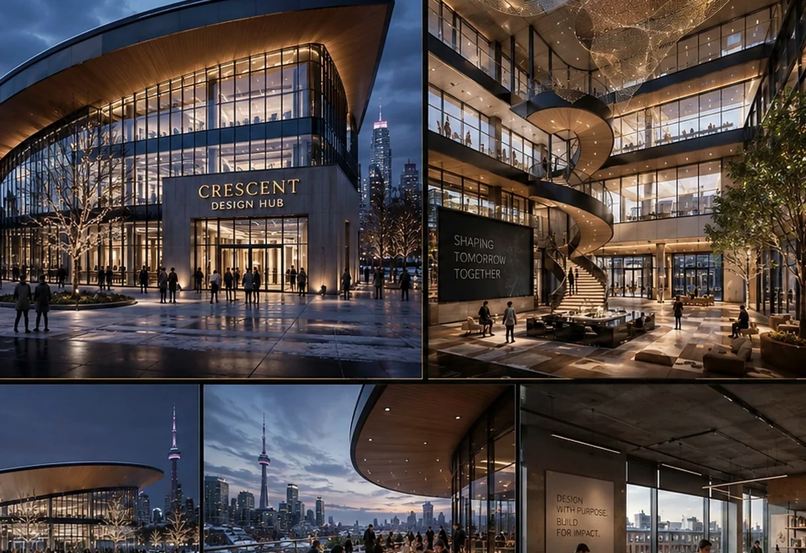
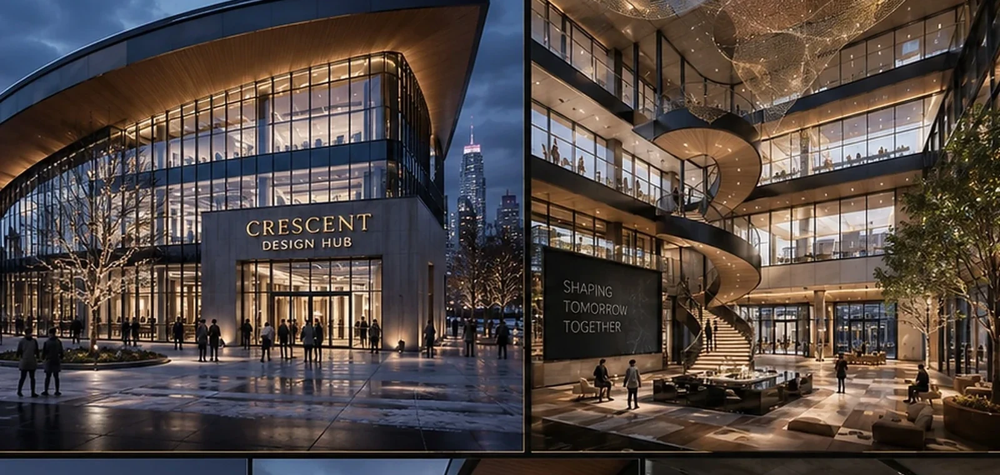
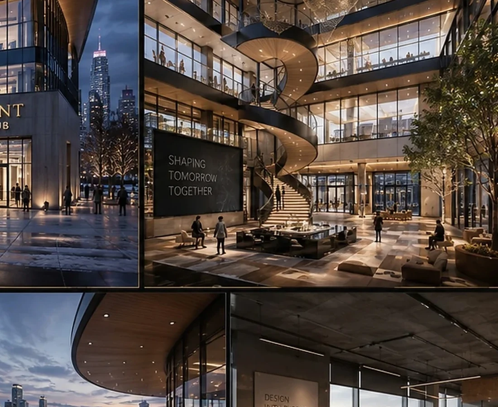
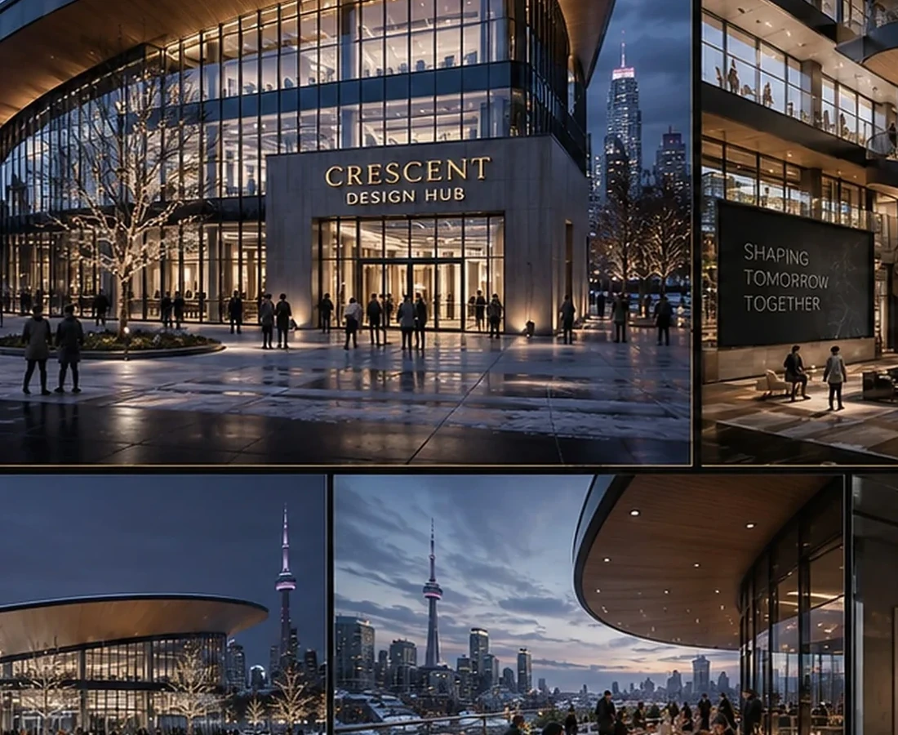

← Back to portfolio
Commercial / Design Hub
Crescent Design Hub
A contemporary commercial design hub defined by an expressive roofline, generous glazing and a public-facing architectural identity.

Design Direction
A project identity shaped by place, typology and experience.
The concept uses form to make the building instantly legible as a creative destination while transparency keeps activity visible and inviting.
Project narrative is based on the supplied BADR portfolio record and visible design material.



A New Development Opportunity